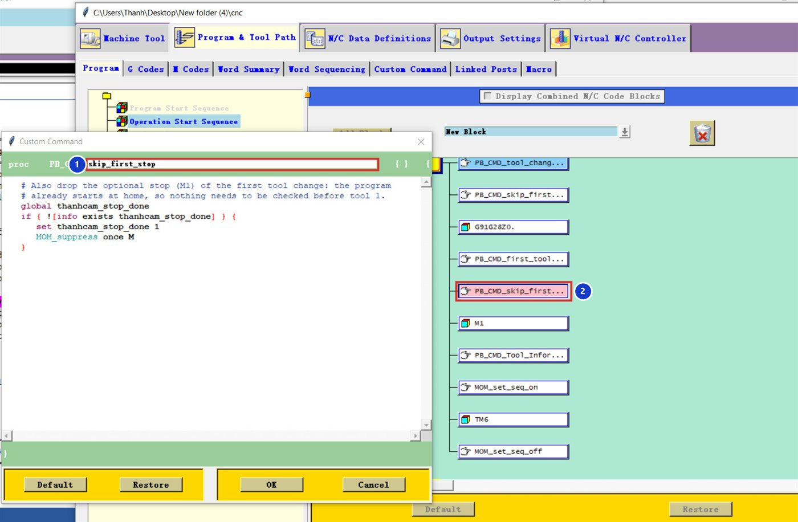

Kết quả
G91G28Z0
G0G90G54X0Y0
G91G28Z0.0
M1
N1T7M6
...
M1
N2T16M6G91G28Z0
G0G90G54X0Y0
N1T7M6
...
G91G28Z0
M1
N2T16M6Tải về: code dán vào Post Builder.
01Tạo lệnh
Tạo lệnh skip_first_stop
Program & Tool Path → Custom Command → Create, đặt tên skip_first_stop 1, dán code:
global thanhcam_stop_done
if { ![info exists thanhcam_stop_done] } {
set thanhcam_stop_done 1
MOM_suppress once M
}02Đặt ngay trước khối
Đặt ngay trước khối M1
Program → Operation Start Sequence → Auto Tool Change. Kéo PB_CMD_skip_first_stop vào ngay phía trên khối M1 2.


M1.Vì sao phải đặt sát M1
MOM_suppress once M chặn từ M kế tiếp được xuất ra. Nếu giữa lệnh này và M1 có khối khác chứa M (ví dụ M6, M8), khối đó sẽ bị chặn thay cho M1.